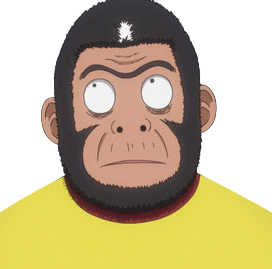
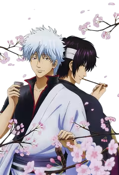

This site exists for the reason to create a very random blog and a list of ~ 150 anime that I have watched. The site mainly features Gintama and every other anime is assessed in the light of or comparison to Gintama, my favourite anime of all time. This site, the attached blog and list are a pedestal raised for Gintama. Other anime are also discussed and recommended here. The list categorises, scores and sorts anime based on my personal preferences and priorities so it might be very dividing and controversial for many. Everything is compared to my personal N.o. 1: GINTAMA.
Warning: Anime is a form of art and one of my favourite forms at that. Every anime is an artwork and as such they will resonate differently with everyone. Tastes differ and are subjective. My opinion does not reflect the mainstream nor does it want to blend in the mass of popular anime. My standards for anime are based on the quality of drawings, sceneries, animation, the depth and / or goal of the story, the depth of the characters and that the anime (and obviously the story) is finished / completed not hanging in the air. Fun fact: Gintama only barely just made it :D. An unfinished anime, even if it is one of the bests, will never score on my list nor will anything that is clearly out only for the money. These might explain why the Big Three are not here. I do not read manga, that is a different type of art to which I cannot connect not even for my favourite anime. Regardless, SORACHI HIDEAKI is my personal hero and I appreciate all the hard work, years and effort he put into making Gintama. When browsing my list which ranks very differently from the most popular ones, please beware that it is based on my and only my opinion. My list and my anime world that revolves around Gintama might catch the eyes of those who search for the same in this world as I do: humour, sarcasm, deep characters and a twist that either rips your heart apart or sets it back to peace. Well, Gintama does both and more for me.
Disclosure: I do not own or have rights over the visual materials related to the anime listed here. Source and credits to the original authors are listed in the footer.
See below ▼
Gintama is the product of mangaka Sorachi Hideaki, the manga was serialized in Weekly Shounen Jump (2003-2018) and later in Shonen Jump Giga and on the Gintama Official App all published by Shueisha. The TV show was animated by Sunrise and initially presented by TV Tokyo and Sunrise Dentsu under editors Shinji Takamatsu and Yoichi Fujita between 2006-2016 then continued by Bandai Namco Pictures from 2015 to 2018 under editor Chizuru Miyawaki.
The 3 movies that drew my interest: The new Benizakura Arc, The Final: Be forever Yorozuya and obviously the Very Final which is also the closure of the anime series. They are all the work of Gintama the Movie Production Committee consisting of Shueisha, Aniplex, Bandai Namco Pictures, TV Tokyo, Warner Bros. Japan, Sunrise, Dentsu, under the editors mentioned before.
Special thanks: Obviously and firstly to SORACHI HIDEAKI. 
To all of the above listed studios, their employees and collaborators, the voice actors, producers, directors, character designers, animators, song-and playwriters, drawers, planners, secretaries, brainstormers, Audio Highs and the different bands for the music, encouragers, to EVERYONE who made it possible to come true, I am eternally thankful for creating and bringing The Masterpiece into my life.
DOES also holds a special place in my heart for creating many of the ops, theme and end songs that I enjoyed the most. And last but not least the biggest thanks to two very talented people:
The voice actor whose acting skills know no boundaries covering a huge range of noises, voices, high and low pitches, associated to silver hair forever in my mind: TOMOKAZU SUGITA; and
The voice actor who reaches the depth of my heart stirring it with his deep tone and silky hoarseness: TAKEHITO KOYASU. He became my favourite voice to listen to in the world.